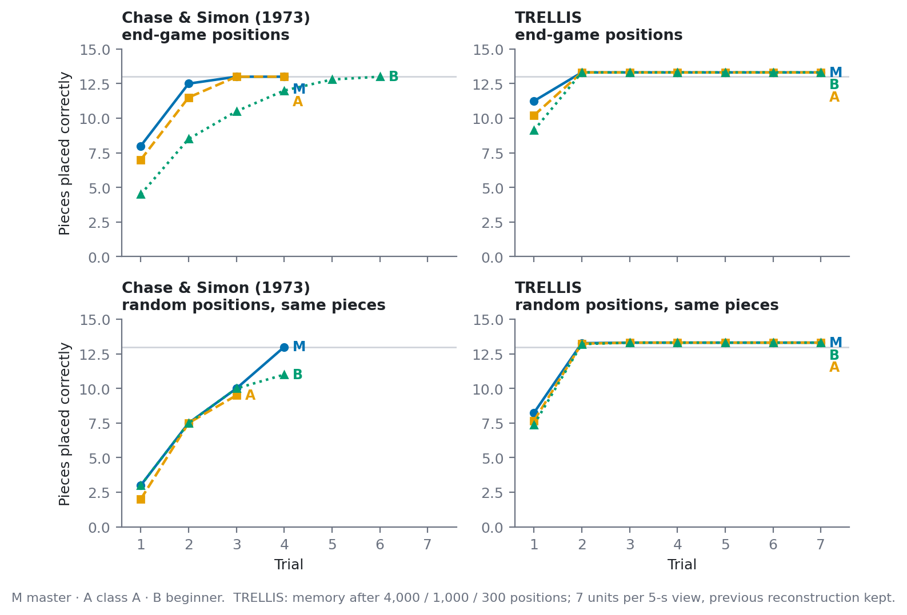
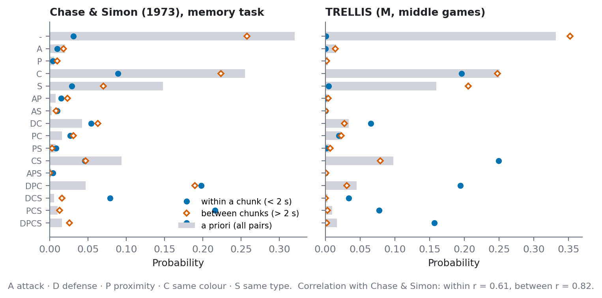
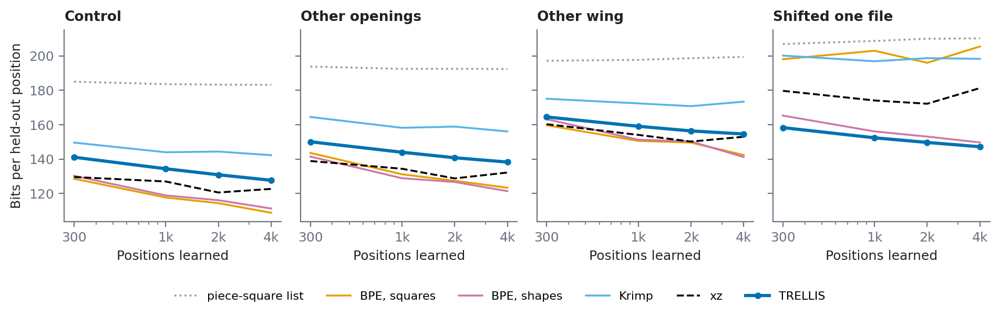
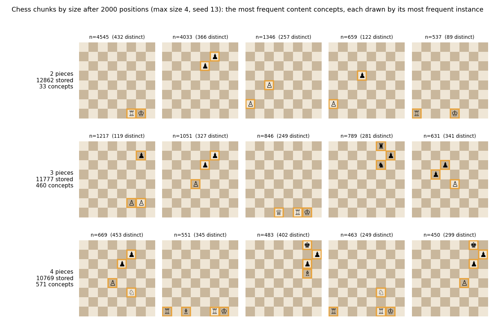
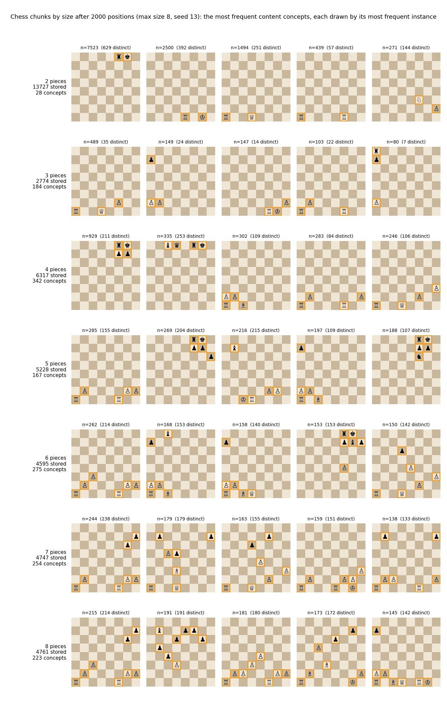
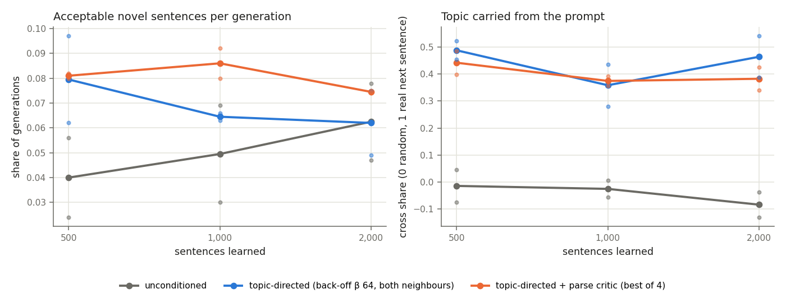

Overview · ISLE · TRELLIS v2
Concepts and chunks from raw experience
Two Cobweb hierarchies learn categories and chunks one experience at a time, parse by inside-outside, and generate by expanding concepts top-down, with nothing outside the two trees.
TRELLIS v2 iterates directly on TRELLIS v1 (ACS 2026). Every element of an experience is described twice: by where it occurs, in a context hierarchy, and by what it is made of, in a content hierarchy. No grammar is extracted. The grammar is implicit in the two trees and shifts a little with every experience. Inside-outside replaces v1's greedy chunking. Generation reads only statistics held by the trees' concepts.
Every mechanism is unsupervised and sees only raw tokens; the generating grammar, gold trees and part-of-speech tags are used only to score. The explorers in Sections 5–8 run on real memory: three grammars learned from their 320 training experiences (seed 13, configuration of 23 October).
- Hierarchies
- 2 Cobweb trees: context (where an element occurs) and content (what it is made of)
- Learning
- one pass; inside-outside; every composite stored, weighted by its posterior
- Parsing
- the analysis with the most expected correct chunks (minimum Bayes risk)
- Generation
- top-down from a sampled whole experience; prompts by gap filling
- Domains
- toy grammars, TinyStories, bAbI, Chinese characters, chess
- Supervision
- none; gold only scores
Summary of results
Generation from the trees alone is 99.7–100% grammatical on the small, med, large and term_low grammars, and 0.75–0.88 of the samples are also new. On large, the share that is grammatical and new grows from 0.11 to 0.81 between 20 and 320 experiences (R1).
Memory stays current without rebuilds. Checking 700 records per experience and moving the misplaced ones (verify 700) brings misplaced context to 0.5% and misplaced content to 2.6–2.9% of stored weight on 2,000 TinyStories sentences, at 2.3–3.1 times the original learning time, and passes the grammar guard. Repair on use keeps the content that memory actually uses under 1% misplaced at about 1.4 times the original's cost (Section 4).
Parses agree across seeds as memory grows: bracket F1 between two seeds rises from 0.64 at 250 sentences to 0.90 at 2,000, with no gold trees (S2).
Gap filling continues prompts: 0.86 of trigrams attested after a one-word prefix and 0.84 after two words; infill stays at 0.22 (S1). On bAbI, the same mechanism answers with an answer of the right type 0.60 of the time, against 0.20 for a frequency baseline (S4).
Chess chunks reproduce the shape of Chase and Simon (1973). Rerunning their experiments figure for figure, more experience recalls more of a real board (trial 1: 14.5, 17.3, 19.1 pieces after 300, 1,000, 4,000 positions) with a third of that spread on random boards, the first chunk is the largest, and chunk relations correlate with theirs (r 0.61 within, 0.82 between). Recall is too high and saturates by trial 3. As a coder TRELLIS wins only on shapes moved to new squares, and shape-based BPE nearly matches it there (S6).
The previous sentence directs the next. Given a story sentence, a general concept directed by it makes a next sentence that fits (cross share 0.40 / 0.54, against −0.13 / −0.04 unconditioned and 0.34 / 0.51 for copying a stored sentence), with three to five times more new sentences and a cost of 1–5 points of grammar (S7).
Still failing: the content tree adds no gain to the chunk factor on held-out composites, infill fails to fit both sides, and chunk context through neighbouring chunks makes the learner memorise (F2).
Reading guide
- Where we stand: the current recipe, the temporal scoreboard, the findings that held up, runs in progress and open questions (27 October).
- Principles and representation: the two instances every element gets.
- Mechanism: learning by inside-outside, keeping memory current, and interactive walk-throughs of parsing, generation, type names and concept-choice rules.
- Studies: prompted generation, parse consistency, chunk representations, bAbI questions, Chinese characters, chess and semantic generation.
- Failure points: the AND/OR checks run after every change, and the known failures.
- Results: learning curves, what was kept and set aside, and what to iterate next.
27 October 2026
Where we stand
The temporal target is met by repairing memory as it is used: records that parsing and generation reach are re-sorted when stale, which keeps used memory under 1% misplaced at under twice the original learning time. Mixing neighbours' names into a word's name speeds word-category convergence while generation holds, which meets the interdependence target. Gap filling answers prompts and bAbI questions, and chess chunks show the expert recall advantage. Given the previous sentence of a story, generation makes a next sentence that belongs with it. Infill, the content tree's gain and grammar under semantic direction remain open.
- Temporal target
- met by path repair on use, budget 700: used records 0.6% misplaced (ctx and cnt) at 2,000 sentences
- Cost
- 1.8–2.1× the original learning time alone at 2,000 sentences (target ≤3×)
- Grammar guard
- passes on all 4 runs (med, large × seeds 13, 17); characters held over 5 seeds
- Parse agreement
- cross-seed bracket F1 0.90 at 2,000 sentences
- Prompting
- prefix trigrams attested 0.86 / 0.84; infill 0.22
The current recipe
The settings below make up the configuration measured on this page since 24 October. The explorers in Sections 5–8 show the 23 October configuration.
| Part | Setting |
|---|---|
| Trees | Two Cobweb trees, compiled (tree="cu", cobweb-private trellis-discrete), bit-identical to the Python tree in reference arithmetic |
| Context instance | Window of two tokens on each side (l2 l1 r1 r2) and the element's own content cc; a word's cc is its token (word_cc). Neighbouring chunks (neighbour_chunks) are off. |
| Content instance | The parts' names L R and the parts' content concepts LC RC; word parts are named by their fine mixed names (part_names unset); band names (part_names="bands") halve the cost but lose about 8 points of real characters and one guard grammar |
| Word names | The parent concepts of 32 sampled instances (name_level="parent", type_k 32), mixed at readout with the names of neighbouring words, weight n/(n+4) for its own (name_mix_k 4) |
| Learning | Inside-outside over every composite; each stored in both trees with its posterior weight (dropped below 0.001); a record may merge or split concepts with probability equal to its weight (restructure="sample") |
| Keeping memory current | Relabel in place, plus repair on use: every sort marks the records under the concept it ends at, and every concept it passes contributes records by a random walk down its children (repair_path). After each experience, up to 700 marked records, oldest-checked first, are re-described and moved if they no longer sort where they sit (repair_use 700, refresh_budget 0). No background sweep. |
| Parsing | Minimum Bayes risk over span posteriors |
| Generation | A whole experience drawn from SENT, expanded top-down; each part from its own leaf; word slots filled by fine names, capped at the best peer (both+peer) |
| Prompting | Gap filling: a committed instance drawn by its posterior of standing in the gap's surroundings (S1) |
Scoreboard
Temporal currency on TinyStories, 2,000 sentences, seeds 13 / 17. "Own weight" sorts each record's stored description at the weight it was placed with. The grammar guard asks for grammaticality within 2 points of the original and more grammatical-and-new samples on med and large, seeds 13 and 17, at 320 experiences.
| Run | Misplaced ctx / cnt, own weight | Share of stored weight misplaced, cnt | Learning time | Grammar guard (gram / gram+new) |
|---|---|---|---|---|
| original | 0.088 / 0.213, 0.081 / 0.229 | – | 1× | 1.0 / 0.868, 0.996 / 0.745, 1.0 / 0.799, 0.993 / 0.833 |
| verify 700 | 0.005 / 0.076, 0.005 / 0.062 | 0.026 / 0.029 | 2.3–3.1× | passes all 4: 1.0 / 0.871, 1.0 / 0.892, 0.996 / 0.846, 0.993 / 0.839 |
| verify 700, min_weight 0.05 | 0.009 / 0.026, 0.005 / 0.033 | – | 2.3–2.8× | fails large-17 (0.98 / 0.803); fails characters |
| verify 700, min_weight 0.03 | – | – | – | passes all 4; fails characters (real at 500: 0.614 / 0.586 vs 0.647 / 0.741) |
Repair on use is measured on the records that memory actually reaches: parsing 200 held-out sentences, 100 samples and 100 prefix-2 gap completions. Each record counts by how often it is reached, and is sorted at its own weight. TinyStories, 2,000 sentences; generation is 300 samples ("grammatical" = every trigram attested).
| Run, seed | Used, misplaced ctx / cnt | Learning s (× original) | Grammatical | Grammatical and novel |
|---|---|---|---|---|
| original, 13 | 0.038 / 0.064 | 3,620 | 0.992 | 0.247 |
| path repair 700, 13 | 0.006 / 0.006 | 8,178 (2.3×) | 0.985 | 0.281 |
| path repair 700 + repair now, 13 | 0.006 / 0.002 | 9,837 (2.7×) | 0.968 | 0.348 |
| original, 17 | 0.073 / 0.103 | 4,059 | 0.988 | 0.282 |
| path repair 700, 17 | 0.006 / 0.005 | 8,120 (2.0×) | 0.980 | 0.227 |
| path repair 700 + repair now, 17 | 0.006 / 0.027 | 8,677 (2.1×) | 0.987 | 0.209 |
"Repair now" also repairs records the moment a sort finds them. It loses 2.4 points of grammaticality on seed 13 and fails one grammar-guard run, so it stays off. Grammatical and novel moves with the seed under path repair (+3.4 points on 13, −5.5 on 17); one standard error over 300 samples is about 2.5 points.
Chinese characters, 500 learned, mean over five seeds (13, 17, 19, 23, 29). Seeds vary far more than settings: the original alone ranges from 0.620 to 0.938 real.
| Run | Real | Real and unseen |
|---|---|---|
| original | 0.762 | 0.053 |
| verify 700 | 0.756 | 0.059 |
| path repair 700 | 0.769 | 0.059 |
| path repair 700 + repair now | 0.760 | 0.068 |
Findings that have held up
1. The trees alone generate grammatical, new sentences
Drawing each part from the context leaf where it stood gives 99.7–100% grammatical samples on four grammars, and novelty rises as leaves collect more committed instances (R1). No records or pointers are read.
2. Verify 700 meets the temporal target
Most of the reported content misplacement was a mismatch of weights: the check sorted records at weight 1 while learning had placed them at their posterior weight. The rest is real drift, and moving records repairs it. At 700 checks per experience, context misplacement is 0.5% and content 2.6–2.9% of stored weight. Generation on TinyStories rises (attested and novel 0.29 / 0.28 against 0.22 / 0.23), and so does word-category accuracy (0.53 / 0.55 against 0.46 / 0.50).
3. Repair on use meets the temporal target
Re-sorting stale records where the trees are used, with no background sweep, keeps used context and content under 1% misplaced at 1,000 and 2,000 sentences on both seeds, at 1.8–2.1 times the original learning time (timed without measurement). The used context misplacement seen earlier (about 8.5%) was the weight mismatch again: low-weight chunks were judged at weight 1. Path repair passes the grammar guard on all four runs and holds characters on the five-seed mean.
3b. Mixed names make words interdependent
A word's name mixes its own parent concept with its neighbours' names (name_mix_k 4). Under path repair, mixing raises word-category accuracy at every checkpoint (0.46 / 0.42 against 0.29 / 0.25 after 50 sentences), and grammaticality stays within 1 point of the original. Grammatical and novel samples move with the seed (+3.4 points on s13, −5.5 on s17), a mean change within noise.
4. Parses are consistent without gold
Two seeds agree on 0.90 of brackets at 2,000 sentences, and a parse barely changes when a word is replaced by a similar one (S2).
5. Gap filling answers prompts
Drawing the filler by its posterior of standing in the gap's surroundings gives attested trigrams after short prefixes (0.84–0.86) and the right answer type on bAbI at 3,000 sentences (0.60–0.63 against 0.23–0.26 without the gap posterior; 0.72–0.73 when the story is in memory, exact 0.26) (S1, S4).
6. Recognition by context explains expert recall
Chess chunks recognised by content and context give experts better recall of real positions than of scrambled ones. Recognition by content alone gives almost no advantage (0.74 against 0.63) (S6).
Running now
| Run | Question |
|---|---|
| Chess state compression (next) | Under one search and value head, does TRELLIS compress chess states better than other representation learners? |
| Semantic generation, next | Can a prompt-directed general concept keep grammar while it makes new sentences that stay on topic? |
Open questions
- How should infill fit both sides? A gap fill satisfies each side's window separately: "the * the tree" becomes "the man the tree".
- How can chunk context enter without memorisation? Neighbouring chunks' content helps one-word prefixes and fails the novelty guard.
- Why does the content tree add no gain on held-out composites? Their sorting paths end 2–4 levels down, where Cobweb opens a new branch.
- How can a general concept make new, on-topic sentences without losing grammar? Directed by the previous sentence it fits as well as copying, but each step up in generality costs grammar (S7).
- Can answers come by analogy? Story-conditioned answering needs the question's chunks aligned with the story sentence that shares its entity and role.
- Does TRELLIS compress chess states better than other representation learners? The next study puts each representation under the same search and value head (S6).
Section 1
What the system holds to
Ten principles constrain every change. None of them mentions words: sentences are the first domain, and characters, bAbI stories and chess positions run on the same code.
@@L 246-257@@Section 2
Two instances for every element
Every word or chunk is described by where it occurs, in the context tree, and by what it is made of, in the content tree. Each tree describes elements in the other's terms.
@@L 263-311@@ @@L 313-364@@Since 24 October a word is named by the parent concepts of 32 sampled instances, mixed at readout with the names of the words beside it (weight n/(n+4) on its own name); a word is named the same way when it is a chunk's part (coarse band names, part_names, were tried in rounds 48–50 and are off in the S7 runs; values in 2a). The option neighbour_chunks adds the content concepts of the same-width neighbouring chunks as lc/rc to the context instance; it fails the novelty guard and is off by default (S1).
Section 2a
Instances and concepts, exactly
Every value on this page was read from a learned memory: the configuration of the S7 rounds (1,000 story sentences, seed 13), with the sentence "the dog ran to get it" re-parsed after learning. It followed "the cat said go get that ball" in its story.
What is stored, and in which order
Each experience is parsed first. Memory's analysis here is [[[the dog] ran] [to [get it]]]. Inside-outside gives every span and split of the sentence a posterior. Then the elements are stored, in this order:
- Each word, weight 1: its context instance goes into the context tree. A word has no content instance.
- Each composite, smallest span first, weight equal to its posterior (dropped below 0.001): first its content instance into the content tree, then its context instance into the context tree. The context instance names the content leaf just made (the
ccfacet), so content must come first. - Generation statistics for the chosen analysis only, as passive counts at the leaves (below).
Every value of a facet that names concepts is a bag: one attribute whose value is a weighted set of concept ids summing to 1. A concept adds weight × share to each id's count, so a facet counts once in category utility however many ids it holds. Raw window tokens are single values.
The context instance: where an element stood
| Attribute | How it is built | "dog" (a word) | "the dog" (a chunk, posterior 0.64) |
|---|---|---|---|
l2 l1 r1 r2 | The raw tokens two places either side of the span; <s> / </s> past the edges. | <s> the · ran to | <s> <s> · ran to |
cc | The element's own content, donated. A word: its identity w:token. A chunk: its content path in bands (below). | {w:dog: 1} | {c111: 1} |
pv | Story runs only: the previous sentence's tokens, each 1/n; blank when no kept sentence came just before. | {the, cat, said, go, get, that, ball: 1/7 each} | |
Switched off in this configuration: the parent and sibling of the analysis (spine), the parts' context concepts (children), named neighbours and neighbouring chunks.
The content instance: what a composite is made of
| Attribute | How it is built | "the dog" | "the dog ran" |
|---|---|---|---|
L, R | Each part's type name: the parent concepts of up to 32 context leaves sampled from where that type has stood (weighted reservoir, A-Res). A word's type is its token; a chunk's is its content leaf. A word's name is mixed with its sampled neighbours' names (tagged L> / R>) at weight 1 − n/(n+4), n = how often it has been seen. | L = name of "the": {-: 0.18, c52891: 0.09, c93822: 0.06, …} | L = name of "the dog": {-: 1}R = name of "ran": {c122209: 0.15, c94133: 0.15, …, L>…} |
LC, RC | Each part's content path in bands. A word part has no content, so -. | - / - | {c111: 1} / - |
Bands. A path is named by a few of its concepts, chosen by information: walking down from the root (root and own leaf left out), a concept is written once for each threshold of 1, 2, 4, 6, 8 and 12 bits that its −log₂(share of the tree) first passes. The whole sentence's content path is root → c23 (1.5 bits) → c2184 (2.7) → c2725 (2.8) → leaf, so its cc is {c23: ½, c2184: ½}; "the dog ran" sits at c4 (1.8) → c1761 (2.8) → c2675 (4.8) and is named {c4, c1761, c2675}, ⅓ each.
A concept
A concept is a node of a Cobweb tree (the compiled Fisher category-utility tree). It holds a count (the summed weight of the instances below it), for every attribute the weighted counts of its values with their sums of squares (what category utility reads), and passive counts: statistics summed up the tree like the others but never used to sort or score. Sorting, merging and splitting see only the instance attributes; a record restructures the tree with probability equal to its weight.
| Passive | Tree | Added at | Value |
|---|---|---|---|
word | context | every stored word's leaf | the token |
fill | context | each word and chosen chunk of the analysis | the token, or the chunk's record |
lpart, rpart | content | each chosen chunk | its left / right part's record |
sent | content | the whole experience | its record |
next | content | the previous whole experience, when this one followed it | this experience's record |
Two real concepts
The context concept holds a substitution class (cat / dog after "the", before a verb and "to"). The content concept holds sentences whose left part is a pronoun-like word and whose right part is a verb phrase; its passives are what generation reads.
What the dump shows that is wrong
- The content tree is flat where it matters most. Every two-word chunk has
LC = RC = -, so it differs from the others only by its parts' type names. They all sit as leaves directly under one concept: c111 (1.4 bits) holds 4,306 leaves and no intermediate concepts, and "the dog" and "get it" both name their content{c111}. At depth 2, where chart generation reads its rules, each such chunk is its own leaf, and its rules back off straight to c111, the class of every two-word chunk. - Part names are partly blank. "the dog" names itself
{-: 1}as a part, and 18% of the name of "the" is-. A type name reads-for a sampled context leaf that no longer hangs in the tree. Counted over every type in this memory, 16,858 of 33,960 sampled leaves (50%) are detached, so half of all name mass is blank. The reservoirs keep leaf objects and are not updated when the tree drops a leaf; which operation drops them (repair moves or restructuring) is not yet traced.
Both bear on the grammar of chart generation (S7): rules over a flat concept with blank part names cannot tell a good split from a bad one.
Fixes (rounds 75–79)
- Detached names. Re-placing a record (a repair move) unfits it and files it again, which gives it a new leaf; the reservoirs held the old leaf. They now hold the record and read its current leaf, so a name always follows where its instance sits now. Detached share after the fix: 0.
- Flat content tree. Cobweb scored a new leaf as if a lone instance predicted all its values with certainty. For a bag-valued description (a name spread over many concepts) it does not, so every chunk looked best as its own leaf. With
exact_alonea new leaf is scored by what it holds (the sum of its squared bag shares). The widest content concept drops from 4,307 children to 3; on the 200-sentence check, max children falls from 866 to 23 (content) and 432 to 20 (context). - Surrounding chunks. The context instance also carries the neighbouring chunks' content (
lc/rc, same level or below), so a chunk's context is described by chunks, not only raw words.
Story generation (expansion, weakest-join critic), 1,000 sentences, seeds 13 / 17: acceptable new sentences per generation.
| Setup | β 1 | β 4 | β 64 | Cross share (β 1) |
|---|---|---|---|---|
| Name fix | 0.029 / 0.014 | 0.048 / 0.035 | 0.072 / 0.076 | 0.30 / 0.36 |
+ exact_alone + surrounding chunks | 0.055 / 0.069 | 0.122 / 0.119 | 0.161 / 0.152 | 0.33 / 0.31 |
The full combination doubles the yield at every back-off strength and keeps the topic. Sentences want a strong back-off (β 64); characters want a weak one (β 1, where the combination is neutral: real and novel 0.048–0.057 across setups at 500 learned). The combination is adopted for all further runs, in both domains; the back-off strength still differs by domain.
Section 3
Inside-outside in place of greedy chunking
For each new experience, inside-outside weighs every composite by both trees, and every composite is stored with its posterior as weight. Chunks are the concepts that keep winning that mass.
v1 committed chunks greedily, one recognized pair at a time. v2 replaces that step with inside-outside. For a new experience it builds a chart of every composite (every span, every split point). Each composite gets a factor from how much better the concepts it sorts to describe it than the root does, in both trees. Inside-outside turns these factors into a posterior for every composite.
Then every composite is stored, in both trees, with its posterior as its weight (Figure 3). Only composites with a posterior under 0.001 are dropped. A chunk that recurs collects weight under concepts that recur with it, and a chunk the evidence does not support adds a sliver of weight that the trees absorb. Over time this is a competitive frontier: the candidates compete for each experience's posterior mass, and the concepts that win are the chunks. Since 24 October a stored record restructures the tree (merges and splits) with probability equal to its weight, so low-weight spans no longer build long merge ladders.
Section 4
Memory that stays current without rebuilds
Stored descriptions name concepts, and Cobweb keeps restructuring. Descriptions are updated in place; records that no longer sort where they sit are moved, either by a fixed check budget or where memory is used.
A stored chunk whose part was named {c7, c31, c88} may find c88 merged away. Earlier versions took the chunk out of the tree and re-inserted it with its new description. With path naming nearly every path changes after each insertion, and re-insertion took 96% of learning time. Name churn is large: after one TinyStories sentence, 25% of word names change which concepts they name, and 91% of those changes go to concepts that already existed.
Relabel in place
A record's description is updated where it sits (Figure 4a). Its old description is taken off the counts along its leaf's path to the root, and the new one is added along the same path. This is v1's leaf remap, and Chris's “dynamic recomputation over stored leaves”. It keeps descriptions current, but a record whose new description belongs elsewhere stays where it was.
Verify and move (refresh="verify", budget 700)
After each experience, its new records and a round-robin slice of 700 older ones are re-described and checked (Figure 4b). A record is moved, taken out and re-inserted (unfit and ifit), when the concepts at its information bands differ from where its current description now sorts. This meets the temporal target on 2,000 TinyStories sentences: 0.5% of context and 2.6–2.9% of content weight misplaced, at 2.3–3.1 times the original learning time, with the grammar guard passed.
Repair on use (repair_use, repair_path)
Nothing is swept (Figure 4c). Every sort through either tree, in learning, parsing and prediction, passes a path of concepts. Each concept a sort passes contributes one record, drawn beneath it by walking down the children in proportion to their counts; records that generation draws are marked too. After the experience, up to k marked records, least recently checked first, are re-described and moved if misplaced. Records nothing reaches are left alone, so repair follows how much each region of memory is used.
What each method costs and repairs
| Method | What it checks | TinyStories result | Cost |
|---|---|---|---|
| Relabel only | nothing is moved | misplaced ctx / cnt at own weight 0.088 / 0.213, 0.081 / 0.229 (2,000 sentences) | 1× |
| Verify 700 | new records + 700 older ones per experience | 0.005 / 0.076, 0.005 / 0.062; 2.6–2.9% of content weight | 2.3–3.1× |
| Repair on use, path, k 3000 | records drawn beneath the concepts sorts pass | used content 0.006 / 0.009; used context 0.084 / 0.086 (1,000 sentences) | about 1.4× |
Update on read (ref_names) | descriptions as references, synced when a sort reaches a node | descriptions exact (drift ≤ 0.01); placement no better than copies | same as copies |
Update on read is kept as an option for exact descriptions. Name churn changes what a record should sit with, so records must still be moved, and moving them is what costs time.
Section 5
Parsing, step by step
Parsing runs the learning procedure without storing anything. Choose a held-out sentence and follow its three steps. Every number is read from the trees. Pick the grammar in the bar above.
@@L 481-509@@Section 6
Generation, step by step
Unprompted generation samples a whole experience from the content root and expands it part by part. Prompted generation fills a gap in a given sentence (S1).
@@L 515-576@@Section 7
Naming a part by where its type has stood
A content instance names its parts in context-tree terms. A type name is re-read from the tree each time it is used, so it never goes stale.
@@L 582-602@@The explorer shows the 23 October configuration: a reservoir of 8 leaves named by the concepts on their paths. The current recipe names a word by the parent concepts of 32 sampled instances and mixes in its neighbours' names at readout (Where we stand).
Section 8
Which concept should a part draw from?
Each rule decides how far a part climbs from its leaf before drawing an instance. The leaf stays the default.
@@L 608-616@@Study S1
Prompted generation
Given part of a sentence, memory generates only the missing piece. The filler is a committed instance drawn by its posterior of standing in the gap's surroundings, then expanded if it is a chunk.
Prompts come from held-out sentences: a one-word prefix [w1 *], a two-word prefix [w1 w2 *], and infill [w1 * w(n−1) w(n)]. The gap's surroundings form a context description q with the same window as a stored context instance; missing positions take the sentence-boundary markers.
Every committed instance, word or chunk, is scored by its stored weight times the probability of q at its context leaf. Each attribute's probability is estimated along the leaf's path with hierarchical Dirichlet back-off, P(v | C) = (nC(v) + β P(v | parent)) / (nC + β), from a Laplace-smoothed root, so unseen combinations borrow from the concepts above the leaf (_gap_fills). One instance is drawn in proportion to its score; a chunk is expanded top-down like any generated part.
gap_mode="window"). The filler is drawn by its posterior of standing in the gap's surroundings. Fillers and scores in step 2 are illustrative; “lily played and laughed” is an infill memory produced with neighbouring chunks on (600 sentences, seed 17); the default gap filling gives “lily smiled and laughed” on the same prompt.Results on TinyStories
2,000 sentences, verify 700, seed 17. Gap filling, share of generated trigrams attested in the corpus:
| Prompt | 600 sentences | 2,000 sentences |
|---|---|---|
prefix-1 [w1 *] | 0.77 | 0.86 |
prefix-2 [w1 w2 *] | 0.69 | 0.84 |
infill [w1 * w(n−1) w(n)] | 0.20 | 0.22 |
Examples:
- lily smiled and laughed
- sam will help you
- the man the tree (error; "the * the tree")
- i can and ben (error; "i * and ben")
On bAbI (3,000 sentences), gap filling after a prefix gives 0.87–0.92 of trigrams attested.
Neighbouring chunks and sibling mode
With neighbour_chunks, a context also names the same-width units beside the element by the content concept of memory's best analysis, and a filler of width m is scored against the prompt's m-word chunk beside the gap. On 600 sentences (verify 700, seeds 13 / 17) prefix-1 improves (trigrams attested 0.78 → 0.87), while prefix-2 and infill get worse. It fails the novelty guard: grammatical and new at 320 falls to 0.67 / 0.73 / 0.51 / 0.60, against 0.871 / 0.892 / 0.846 / 0.839. A more specific context makes the learner memorise, so the option stays off.
Sibling mode (gap_mode="sibling", _sibling_fills) parses the prompt and draws a committed composite whose left part matches a unit on the parse's right edge; the gap is that composite's right part. It is weak in every setting (trigrams attested 0.19–0.37).
Case studies
Case 1 · claim: after a prefix, the filler is usually a whole chunk
Gap filling draws committed instances, words and chunks alike. After a prefix, most of the probable fillers are multi-word chunks, so one draw completes the sentence.
The run is the one in the table: verify 700, seed 17, 2,000 sentences, and every fixed prompt is shown. Whole chunks keep the completion grammatical, which is why prefix prompts reach 0.84–0.86 of trigrams attested. They also make the completion a stored phrase: "i am sorry tim" is a phrase memory has seen. The one prefix error, "the is happy", draws a chunk that should follow a noun.
Case 2 · claim: infill fails when the filler must fit both sides at once
Each attribute of the gap's surroundings is scored separately, so a filler can fit the word on its left and the word on its right without fitting the two together. Infill reaches only 0.22 of trigrams attested.
The same run, all six infill prompts. Where one filler can carry the sentence alone ("will", "felt sorry"), infill succeeds. It fails where the gap needs a verb that governs the right side: "the * the tree" needs a verb such as "saw", and "i * and ben" needs one such as "played with tim". Each filler fits its left neighbour and could precede the word on its right, but nothing checks the whole span. The three identical draws on the failures suggest one filler takes nearly all the posterior there.
Case 3 · claim: sibling mode is weak
Sibling mode completes a prompt with the right part of a stored composite whose left part resembles the prompt's last unit. The right part is often the second half of a phrase that needs a different first half.
These are the logged examples in order (logs/v3-base-prompt600-17.log). The bad completions are object or complement phrases ("an idea", "lots of fun") with the verb that should introduce them ("had", "was") missing. They likely come from composites such as [had [an idea]], where the left part matched the prompt only by context. Trigrams attested: 0.37 here, against 0.77 for gap filling on the same memory.
Study S2
Parse consistency without gold
Without gold trees, a parser can still be judged by whether it agrees with itself: across seeds, across checkpoints, and when a word is replaced.
400 held-out TinyStories sentences are parsed by memories learned from different seeds and stream sizes (original configuration). Cross-seed F1 compares the brackets of seed 13 and seed 17. Substitution F1 compares a sentence's parse with the parse after one word is replaced by a near or a far word. Stability compares a checkpoint's parses with the previous checkpoint's.
| Sentences learned | 250 | 500 | 1,000 | 2,000 |
|---|---|---|---|---|
| Cross-seed bracket F1 | 0.64 | 0.78 | 0.79 | 0.90 |
- Substitution F1 at 2,000 sentences (seed 17): 0.962 for a near word, 0.893 for a far word.
- Stability against the previous checkpoint reaches 0.92.
- Verify 700 is less stable: cross-seed 0.77–0.79 at 2,000, substitution 0.84–0.87 near and 0.77–0.79 far.
- bAbI parses look like
[[sandra travelled] [to [the garden]]], with phrase consistency 0.91.
Case studies
Case 1 · claim: two seeds come to agree as memory grows
At 250 sentences the two seeds bracket the same held-out sentence differently; at 2,000 they mostly agree.
Original configuration, the first held-out sentences, nothing selected. At 2,000 sentences the seeds differ on "it was a big day for him" only in where "him" attaches. The seed-13 parses at 2,000 are drawn from its saved spans (experiments/v3/results/consistency/orig_s13.json); its log stops at 1,000.
Case 2 · claim: verify 700 is less stable across seeds
With verify 700, the seeds still disagree at 2,000 sentences, sometimes at the top split.
Both seeds find "the bird" and "it was", and they split the rest differently: cross-seed F1 0.77–0.79 against 0.90 for the original.
Case 3 · claim: a parse survives replacing one word
Swapping one word for its nearest word by learned name leaves the rest of the parse in place; the "near" word is not always a substitute.
Original configuration, seed 17, 2,000 sentences; the first eight held-out sentences with a replaceable word, of which four are shown. A true substitute ("asked → says") keeps every bracket, while a function word ("asked → a") moves one. The nearest word by learned name is often no substitute ("day → anymore", "said → bad"). The parse may then stay the same for the wrong reason, so the near-word F1 of 0.962 likely overstates invariance.
Case 4 · claim: bAbI parses are phrase-like and stable within a seed
A bAbI statement keeps one phrase-like parse as memory grows; another seed may choose a different one.
Phrase consistency (0.91) asks whether one memory brackets a repeated string the same way everywhere; it does not ask whether two seeds agree. Question lines parse less like phrases than statements.
Study S3
Chunk representations
Do the chunk types memory forms group by phrase type? A 2-D map and a nearest-neighbour probe answer it for the 600 most frequent chunk types.
Each chunk type, learned from 2,000 TinyStories sentences (verify 700), is represented by its context description and by its content description. Phrase types come from NLTK and are used for the diagnosis only. Purity is the share of a type's 5 nearest neighbours (cosine) with the same phrase type; the shuffled baseline permutes the labels.
| Representation | 5-NN purity, seed 13 | Shuffled | 5-NN purity, seed 17 | Shuffled |
|---|---|---|---|---|
| Context | 0.50 | 0.25 | 0.49 | 0.24 |
| Content | 0.33 | 0.25 | 0.31 | 0.24 |

The context tree carries phrase type; the content tree carries it only weakly, consistent with the content tree adding no gain to the chunk factor (F2).
Case studies
Case 1 · claim: the context representation groups chunks by phrase type
A chunk's nearest neighbours by context are chunks of the same kind.
Five nearest chunk types by cosine over the context description, seed 13, 2,000 sentences, verify 700. Substitutable chunks stand in the same places, so they share context. "in the park" fails; its neighbours mostly end sentences, so the likely reason is that sentence-final chunks share a context whatever their type.
Case 2 · claim: the content representation carries phrase type only weakly
By content, most chunk types share the same few neighbours.
The same five frequent types answer every query: the dense cluster in Figure 6. This fits the content tree's missing gain (F2): content descriptions do not yet separate kinds of chunk.
Study S4
bAbI questions as gap filling
The question plus a question mark is the prompt, and the answer is the generated gap. Memory reaches the right kind of answer three times as often as a frequency baseline; exact answers need the story.
The stream holds each story's sentences once and lines of the form <question> ? <answer>: 76,610 sentences, 4,114 distinct, 150 words, from the 20 bAbI tasks. Type accuracy asks whether the answer is one the task ever has; story-restricted exact accuracy limits fillers to the story's words and closed answers such as yes or no. The baseline draws an answer from the training answers by frequency.
| 600 sentences, seeds 13 / 17 | Right type | Exact | Exact, story-restricted |
|---|---|---|---|
| Gap filling | 0.60 / 0.58 | 0.21 / 0.17 | 0.25 / 0.24 |
| Gap filling + neighbour chunks | 0.64 / 0.63 | 0.19 / 0.19 | – |
| Frequency baseline | 0.20 / 0.23 | 0.06 / 0.06 | – |
Neighbouring chunks give no real gain. Long questions fail: “where was the apple before the bathroom ?” is answered yes or no, because the window sees only “bathroom ?”. QA lines parse as [where [is [[mary ?] bathroom]]]. The next step is answering by analogy: align the question's chunks with the story sentence that shares its entity and role, and answer with the filler in the aligned slot.
Case studies
Seed 13, 600 sentences, verify 700: the first test questions of tasks 1, 3, 6 and 15, nothing selected. "Memory" answers from the question alone; "story" keeps only fillers made of the story's words.
Case 1 · claim: memory gives the right kind of answer, not the right one
Asked where someone is, memory names a location, but not the one the story says.
The gap's window sees "john ?" and fills a word that stands there in training: some location. Nothing ties it to this story. Restricting to the story's words picks one of its two locations, here the wrong one.
Case 2 · claim: exact answers need the story
When the story names one location for the person, restricting to its words gives the right answer.
Story restriction raises exact accuracy only from 0.21 to 0.25. It filters words; it does not find the sentence about sandra. Answering by analogy, aligning the question's chunks with that sentence, is the next step.
Case 3 · claim: long questions fail
A question with a second clause is answered as a yes/no question.
The two-word window sees "the bathroom ?", which is also how task-6 yes/no questions end ("is john in the kitchen ? no"). The parse joins "apple before", so the question's own chunks do not isolate "where … the apple".
Case 4 · claim: an exact answer can be right by frequency
A correct answer to a deduction question does not show deduction.
Memory answers "mouse" to both. Task 15 has four answers (cat 29%, mouse 27%, sheep 24%, wolf 21% of training answers), so one in four guesses of the right type is exact by chance.
Study S5
Chinese characters
The same code runs on character decompositions, with components in spatial relations. A character has only a few parts, so it is a hard test for any change that drops low-weight analyses.
- Well formed: the sample reads back into a structure.
- Real: the sample is an existing character.
- Novel: the sample was not in training.
Omission is measured on held-out characters; right-branching scores 0.678.
Characters as a guard for memory repair
Real and real-and-unseen characters at 500 experiences, seeds 13; 17:
| Run | Seed 13 | Seed 17 |
|---|---|---|
| original | 0.647 / 0.046 | 0.741 / 0.072 |
| verify 700 | 0.711 / 0.043 | 0.687 / 0.090 |
| repair on use, path 700 | 0.739 / 0.036 | 0.647 / 0.074 |
| repair on use, path 3000 | 0.681 / 0.044 | 0.612 / 0.082 |
| min_weight 0.03 (real only) | 0.614 | 0.586 |
Every repair variant is up on seed 13 and down on seed 17. Real-and-unseen is too rare (4–9%) to separate them. Dropping low-weight records fails here because a character's alternative analyses carry information.

Case studies
Case 1 · claim: samples are well formed, and some are real characters
Generated decompositions read back into structures, and some spell existing characters.
Seed 13, 500 experiences, original configuration (real 0.647). Matches are against the IDS file. The nested sample shows that a part can itself be a composite (勺 inside 瓝).
Case 2 · claim: new characters combine learned components in learned positions
Novel samples put familiar components in positions those components take in real characters.
TRELLIS v2 export (Figure 7 source, 2,000 training characters, seed 13), from its labelled novel lists. One "novel" sample is a real character that was not in training. Such cases are rare (real and unseen 4–9% in v3), which is why they cannot separate the repair variants.
Case 3 · claim: parsing misses part of held-out structure
Parsing a held-out character recovers the top split but not always the inner one.
Seed 13, 500 experiences. Omission is the share of gold brackets the parse lacks: 0.585 on held-out characters, against 0.678 for right-branching.
Study S6
Chess: Chase and Simon, figure for figure, and chunks that move
TRELLIS reproduces the shape of Chase and Simon's (1973) findings: more experience means more of a real board recalled, a small effect on random boards, big chunks first, and chunks held together by chess relations. It recalls too much too soon. As a compressor it beats co-occurrence chunks only where familiar shapes stand on new squares.
Chase and Simon (1973), figure for figure
Each of the paper's experiments is rerun on a TRELLIS player (flat chunks, interaction joins, absolute squares). The paper's own numbers are on the left of each figure, TRELLIS's on the right, both seeds averaged (s13, s17).
- Players. Experience stands in for rating: B (beginner) learns 300 positions, A (class A) 1,000, M (master) 4,000, all from Lichess games rated 1800 and above.
- Positions. 100 held-out middle-game positions (ply 41, 24 to 26 pieces) and end-game positions (ply 81, 12 to 15 pieces). Each also appears as a random position: the same pieces on random squares.
- Trials. One 5-second view per trial puts 7 units in short-term memory: a recognised stored chunk counts as one unit, any other piece as one unit. The board is rebuilt from them, and the rebuild is kept for the next trial, as subjects kept their board.


| Pieces on trial 1 | B, real | A, real | M, real | M − B, real | M − B, random |
|---|---|---|---|---|---|
| Chase & Simon, middle games | 4.5 | 8.5 | 16 | 11.5 | −0.5 |
| TRELLIS, middle games | 14.5 | 17.3 | 19.1 | 4.6 | 1.7 |
| Chase & Simon, end games | 4.5 | 7 | 8 | 3.5 | 0 |
| TRELLIS, end games | 9.1 | 10.2 | 11.2 | 2.1 | 0.8 |
- What replicates. Recall of real positions rises with experience, and the gap between players on real boards is about three times the gap on random boards. End games show the same order with a smaller spread, as in the paper.
- What does not. The levels are too high: a TRELLIS beginner's 7 units always hold at least 7 pieces, where Chase and Simon's beginner placed 4.5, and every player rebuilds the whole board by trial 3. Random recall still rises a little with experience (1.7 pieces), where the paper's master did no better than the beginner. Short-term memory is the same 7 units for every player; nothing here was fitted to the paper.

As in the paper, the first chunk is the largest and the master's is the largest of all (4.0 pieces against Chase and Simon's 3.8). TRELLIS always uses all 7 units, so its chunk count does not grow with skill; Chase and Simon's masters recalled more chunks (7.7) than their beginners (5.3). TRELLIS's chunk sizes fall steadily because it fills short-term memory largest first.

The relations that hold a TRELLIS chunk together are the ones that held Chase and Simon's subjects' chunks together: pairs that defend each other, stand close and share a colour (DPC, DCS, PCS, DPCS) fall within chunks far above their a priori rate, and unrelated pairs (−) fall between chunks. The profiles correlate with the paper's at r 0.61 within chunks and 0.82 between. TRELLIS over-uses same-colour, same-type pairs (CS) within chunks, its pawn chains.

Pieces with more relations between them are bound more tightly: Chase and Simon's subjects placed them faster, and TRELLIS holds them in one chunk more often (0 with no relation, 0.65 with four). The more experienced player binds more at every count.
Familiar shapes on new squares
A co-occurrence chunk (byte-pair merging on piece-square sets) is an exact set of pieces on exact squares, so the same shape one file over is a new, unseen item. TRELLIS describes a chunk by its pieces at offsets from an anchor (and, in one arm, also by its squares) and can copy a stored chunk at a new anchor. Both learn 4,000 move-30 positions from ECO C games (1.e4 e5 and the French) with White's king on files e–h, then code 1,000 unlearned positions from each test set (chess_transfer_sets.py, seed 13). Held-out code bits per position, the model not charged; co-occurrence at its best merge count (2,000).
| Test set | Piece-square list | Co-occurrence chunks | TRELLIS (offsets + squares) | TRELLIS (offsets only) |
|---|---|---|---|---|
| control: same kind of position | 183.2 | 108.6 | 127.7 | 130.7 |
| dropped: control's pieces on one edge file removed | 167.1 | 112.1 | 123.6 | 125.6 |
| family: queen's-pawn openings (ECO D, E) | 192.4 | 124.1 | 138.6 | 138.3 |
| wing: White castled queenside | 199.4 | 143.8 | 158.5 | 154.6 |
| shift: the dropped positions moved one file | 210.2 | 206.7 | 151.6 | 147.2 |
- Shift. Moving every piece one file (the pieces falling off the far edge removed, at most 3, kings kept) erases co-occurrence chunks' saving: 3.5 bits below the piece-square list, against 55 on the same positions unmoved. TRELLIS keeps a 58–62 bit saving and codes the shifted positions 55–60 bits cheaper. Moving costs co-occurrence chunks 95 bits per position, TRELLIS 28 (with squares) or 22 (offsets only).
- Why. TRELLIS still copies about 5.3 chunks per shifted position, as it does unmoved, but by offsets: copies on their own squares fall from 4.4 to 1.7 per position. The extra cost is the anchors (14.5 to 27.6 bits), which each concept predicts from the squares it was seen on.
- Natural shifts. On other openings and the other wing co-occurrence chunks still win, but the gap narrows from 19 bits (control) to 14 (family) and 11 (wing, offsets only). Queenside castling and queen's-pawn structures are mostly new shapes, not old shapes moved.
- Squares in the description help on the control (127.7 against 130.7) and hurt wherever shapes move (shift 151.6 against 147.2): they tie concepts to places.
Six coders, four test sets, four amounts of learning
Do chunks described by shape, not square, close the gap for other chunkers too? Each coder learns 300 to 4,000 positions and codes 1,000 unlearned positions from four of the sets above (seed 13, held-out code bits, model not charged):
- BPE, squares: byte-pair merging on piece-square sets (the co-occurrence chunks above).
- BPE, shapes: the same merging on translation-free shapes, each chunk coded as its shape plus an anchor square.
- Krimp: MDL itemset mining (Vreeken et al., 2011), with its standard cover.
- xz: a general-purpose compressor, each position coded given all learned positions.
- TRELLIS: the better of its two arms (offsets only, or offsets + squares).

| 4,000 learned | Control | Other openings | Other wing | Shifted |
|---|---|---|---|---|
| piece-square list | 183.2 | 192.4 | 199.4 | 210.2 |
| BPE, squares | 108.8 | 123.4 | 142.4 | 205.5 |
| BPE, shapes | 111.3 | 121.4 | 141.2 | 149.7 |
| Krimp | 142.3 | 156.1 | 173.4 | 198.3 |
| xz | 122.7 | 132.2 | 153.0 | 181.3 |
| TRELLIS | 127.7 | 138.3 | 154.6 | 147.2 |
- Shapes rescue BPE. Describing chunks by shape rather than square costs BPE only 2.5 bits on the control and saves it 56 bits on shifted positions. Shape BPE then trails TRELLIS on shifted positions by only 2.5 bits at 4,000 positions (7 at 300), and beats it by 14–16 bits everywhere else.
- TRELLIS is not the best coder. It wins only on shifted positions, narrowly. Its advantage in the transfer test came from describing chunks by shape, which a frequency miner can also do.
- Square-bound coders do not transfer. BPE on squares, Krimp and xz all lose most of their saving on shifted positions, and BPE on squares and xz get worse there as they learn more.
- Every learner improves with data except Krimp, which flattens by 1,000 positions.
Earlier chess studies: recognition recall, chunk types, move choice, lossless codes and learning curves
GraphTrellis learns real positions (Lichess 1800+, ply 30), with positions as board graphs. At each checkpoint it sees 100 held-out positions and the same pieces scattered at random.
- Recognition (CHREST-like): a chunk is one unit if its recognition bits, from climbing both trees by content and context, are at least θ; otherwise it falls apart into its parts.
- Short-term memory: 7 units, the largest kept.
- Recall: the share of pieces inside the kept units.
| Recall, 4,000 learned positions | Real, s13 | Scrambled, s13 | Real, s17 | Scrambled, s17 |
|---|---|---|---|---|
| θ 16 | 0.77 | 0.54 | 0.88 | 0.73 |
| θ 20 | 0.48 | 0.28 | 0.64 | 0.38 |
| Novice (0 learned) | 0.265 | 0.265 | 0.265 | 0.265 |
Recognising by content alone gives almost no advantage (0.74 against 0.63): a chunk's content names only its pieces' categories, which scrambled boards share. Where pieces stand is what experts recognise.
Recall grows with experience
Experience stands in for rating: the more positions memory has seen, the more of a real board it holds in seven units.
| Recall at θ 16 (s13 / s17) | 0 | 300 | 1,000 | 2,000 | 4,000 |
|---|---|---|---|---|---|
| Real | 0.27 / 0.27 | 0.30 / 0.43 | 0.58 / 0.70 | 0.71 / 0.83 | 0.77 / 0.88 |
| Scrambled | 0.27 / 0.27 | 0.27 / 0.31 | 0.39 / 0.46 | 0.48 / 0.66 | 0.54 / 0.73 |
The expert advantage on real positions replicates. Chase and Simon's masters recalled scrambled boards about as poorly as novices; here scrambled recall also rises, to 0.54 / 0.73. Gobet and Simon (1996) found a small expert edge on scrambled boards, but this one is larger.
Case 1 · claim: experience lets memory hold a real board in a few chunks
One held-out position: a novice keeps 7 single pieces; after 1,000 positions, 6 chunks hold 23 of its 28 pieces.

Seed 13, θ 16, seven units kept; recalled pieces in full, each chunk ringed in its own colour. At 1,000 the real board's seven units are six chunks and one piece. One chunk is local: white's rooks d1 and f1 with king g1 and bishop c3. Others join across the board: pawns f2 and g2 with black's g7 and king g8, up the g-file, and a3 with a5 and rook a8 along the a-file. These are the long joins discussed below. At 1,000 the scrambled board yields no chunk at all. At 4,000 it yields four chunks of two or three pieces (16 of 28 pieces), and that is the rise in scrambled recall Chase and Simon did not see.
Case 2 · claim: the advantage is an average, not a rule for every board
Over the first eight held-out positions, real beats scrambled at 4,000 learned on all eight, by 0.07 to 0.35.
At 0 learned every piece is its own unit, so real and scrambled recall agree exactly. At 1,000 and 2,000 a scrambled board sometimes wins: position 1 at 1,000 and position 2 at 2,000, marked. By 4,000 the real board wins on all eight.
Chunks at every size
After 2,000 positions, memory holds about 12,900 committed two-piece chunks, 11,800 three-piece and 10,800 four-piece chunks (s13, chunks up to four pieces). The content tree sorts them into 33, 460 and 571 concepts. The most frequent concepts are familiar chess patterns:
- the castled king, rook f1 and king g1 (4,545);
- the pawn chain e6–f7 (4,033);
- the king's shelter: king g8 with pawns g6 and h7, here with a bishop on g5 (483);
- the back rank, queen d1, rook f1 and king g1 (846).

On held-out positions at θ 16, memory recognises about 4.3 multi-piece chunks per real position and 2.2 per scrambled one. It leaves 11.0 real pieces outside any recognised chunk, against 18.9 scrambled.

With chunks of up to eight pieces (s13, 2,000 positions), memory stores 4,600–6,300 chunks at each size from four to eight. Mid-sized concepts are whole formations:
- black's castled king with f7 and g7, alone (929) or with h6 (269) or a knight on f6 (188);
- white's queenside corner, rook a1 with pawns a2 and b2 and bishop c1 (302).
At seven and eight pieces, nearly every instance is unique: one concept gathers 215 chunks in 214 placements. These largest chunks join white's pawn wall to black pawns across the board. On held-out positions, memory recognises 2.0 chunks of five to eight pieces per real position and 1.4 per scrambled one, and leaves 10.4 real pieces outside any recognised chunk against 15.5 scrambled.

Many joins span the board: a part joins the first piece along a ray, at any distance and of either colour. Chase and Simon's chunks are compact and mostly of one colour. Long joins also fit scrambled boards, which may explain the rise in scrambled recall. Joining only nearby pieces, in the board-graph rework, is the change that would test this.
From move choice to state compression
The first Elo study let memory choose the move after which it recognises the position best. That player was about as strong as random (−58 to 84 Elo, random = 0) and did not improve with experience. A safety filter that rejects moves losing material lifted it to 210–317, but that strength came from the filter. The study was stopped on 27 October.
TRELLIS is a representation learner, so the next chess study tests it as one:
- One search, alpha-beta minimax at a fixed depth, with a small value head; the arms change only the state representation.
- The value head trains on scores from a deeper search on the same positions.
- TRELLIS enters in two ways: its concept codes as the value head's features, and its concepts as a transposition table, where positions in one concept share a stored value.
- The comparison is against other representation learners: raw piece-square features, an autoencoder, a VQ-VAE (discrete codes) and a contrastive board encoder. The same comparison goes into the Chinese characters study (S5).
- Measures: Elo at a fixed node budget, bits per state, nodes searched to reach an Elo, and how each changes with the number of positions seen.
First result (seed 13). The value head is a ridge regression fitted on 2,500 positions and scored on 1,000 held-out positions. Its target is a depth-3 alpha-beta score with capture quiescence, material plus piece-square terms. Every representation learner trains on the same 4,000 unlabelled positions; TRELLIS learns from 2,000 of them, θ 12.
| Representation | Bits per position | R² | Spearman |
|---|---|---|---|
| raw piece-square (768) | 254.7 | 0.43 | 0.60 |
| piece counts only (12; a reference, not a state code) | 38 | 0.57 | 0.60 |
| TRELLIS (content concepts + unrecognised pieces) | 112.2* | 0.01 | 0.05 |
| TRELLIS, with each chunk's exact leaf added | 112.2* | 0.00 | 0.08 |
| autoencoder, 32 dims | 256 | 0.01 | 0.11 |
| VQ-VAE, 8 codes of 64 | 48 | 0.00 | 0.03 |
| contrastive, 32 dims | 256 | 0.00 | 0.08 |
Only the raw board and the piece counts predict the score. Piece counts alone (0.57) beat the full board (0.43), so this teacher's score is mostly material. Each compressed representation keeps too little of the material balance for a linear head to recover it.
*The TRELLIS bit counts are not comparable with the others. A chunk's content description holds its parts' learned context names, not their pieces. Its concept, even its exact leaf, therefore does not say which pieces it holds, and the 112 bits name chunk types without coding the board. Adding the exact leaf (3,462 indicators in place of 182) changed nothing. The corrected test codes a chunk only as a pointer to an identical stored chunk, the same pieces on the same squares, as CHREST does. Its codes decode to the position, and its bits compare with an entropy-coded piece-square list. A one-hidden-layer head did worse than ridge on every representation except piece counts and is not reported.
Lossless chunk code. The dictionary holds the composites memory chose for its 2,000 training positions, each keyed by its exact pieces and squares (14,534 chunks). A held-out position's parse is read top-down. A unit with an identical stored chunk becomes one item; otherwise its parts are coded in turn, down to single pieces. Items are entropy-coded with their usage frequencies on the training positions. The baseline is the same code with no chunks.
| Lossless code (held-out positions) | Bits per position | Items | Value head R² |
|---|---|---|---|
| piece-square list, uniform | 254.7 | 26.6 | 0.43 |
| piece-square list, entropy-coded | 189.9 | 26.6 | 0.43 |
| TRELLIS chunk dictionary + leftover pieces | 151.4 | 14.1 | 0.04 |
- Chunks shorten the code by 20% over entropy-coded piece-squares: 6.0 chunks and 8.1 single pieces per position in place of 26.6 pieces. Neither count includes the cost of storing the dictionary or the frequency table.
- 53% of the units recognised at θ 12 have an identical stored chunk (91% in a 200-position smoke run). Recognition names a chunk type; about half the time memory also holds that exact chunk.
- The code is lossless, yet a linear value head on its items reaches only R² 0.04. Each chunk is one indicator with its own weight (6,599 features against 2,500 labelled positions), so the head cannot share what a pawn is worth across chunks. A search would decode the code to the board before evaluating, and the value is then the raw board's.
- The autoencoder and contrastive bits (8 bits per dimension) and the VQ-VAE bits count lossy codes, so they are not comparable with this table until each is paired with its reconstruction error.
With the dictionary's own cost, against a co-occurrence baseline. Storing a chunk costs its pieces written as a piece-square list. Pruning the TRELLIS dictionary to chunks memory chose in at least m training positions trades code length for dictionary size. The baseline mines its chunks by co-occurrence alone: byte-pair merging on piece-square sets, up to 4 pieces, from the same 2,000 training positions, coded and charged the same way. Bits are per position over the 3,500 held-out positions, including the dictionary's cost spread across them.
| Lossless code | Chunks | Code bits | + dictionary | Total |
|---|---|---|---|---|
| piece-square list, entropy-coded | 0 | 189.9 | 0 | 189.9 |
| TRELLIS, every chosen chunk (m 1) | 5,831 | 151.4 | 49.2 | 200.6 |
| TRELLIS, m 5 (best) | 824 | 157.4 | 5.5 | 162.9 |
| TRELLIS, m 20 | 178 | 164.3 | 1.1 | 165.4 |
| co-occurrence merges, 200 | 200 | 130.7 | 1.3 | 132.0 |
| co-occurrence merges, 800 (best) | 800 | 120.9 | 5.8 | 126.6 |
Counting its own cost, the TRELLIS dictionary saves 14% over entropy-coded piece-squares, and plain co-occurrence saves 33%. At a matched dictionary size (about 800 chunks) co-occurrence chunks code a position in 121 bits against TRELLIS's 157. TRELLIS's joins are chosen by concept gain along rays at any distance, not by how often pieces stand together, and half of its recognised units have no identical stored chunk. As a lossless compressor of chess positions, TRELLIS is beaten by the simplest frequency baseline. Its own case has to rest on what frequency mining lacks: recognising a chunk type it has not stored exactly, recall under scrambling, and transfer.
Recall with reproducible chunks
Recall as above counts every recognised chunk, but a chunk helps recall only if memory can put its pieces back. Here a recognised chunk counts only when an identical chunk is stored (verified). The same test also runs on chunks mined by co-occurrence alone, the byte-pair dictionary used as CHREST uses its chunks. Short-term memory keeps the 7 largest units; 100 held-out positions; recall on real / scrambled boards, θ 12.
| Positions learned (seed 13) | 300 | 1,000 | 2,000 | 4,000 |
|---|---|---|---|---|
| recognised (as above) | 0.55 / 0.42 | 0.82 / 0.71 | 0.86 / 0.78 | 0.89 / 0.83 |
| verified | 0.44 / 0.27 | 0.62 / 0.29 | 0.67 / 0.29 | 0.71 / 0.30 |
verified, pieces in content (word_cnt) | 0.57 / 0.29 | 0.71 / 0.31 | 0.75 / 0.31 | 0.77 / 0.34 |
| co-occurrence chunks | 0.74 / 0.31 | 0.80 / 0.33 | 0.81 / 0.34 | 0.84 / 0.35 |
Seed 17 agrees (verified 0.75 / 0.32 at 4,000). With reproducible chunks the Chase & Simon effect is clean: recall of real positions grows with experience while recall of scrambled ones stays near 0.3. The recognised count's high scrambled recall (0.83) came from chunks memory recognises but cannot reproduce. Putting the pieces into the content description adds 6–13 points. Co-occurrence chunks still recall more of real positions: 17 points more than the best TRELLIS arm at 300 positions, 6–9 points from 1,000 on.
Decoding by generation
A unified code uses TRELLIS's own generator as the probability model. A position's code is the sequence of choices generation makes to produce exactly that position, each costing −log2 of its probability, so a decoder recovers the board by running generation on the coded choices (chess_compress_gen.py). A top chunk's content concept is coded by TOP, its anchor by the anchors stored under that concept, and each part by generation's draw: a mixture over the concept's part slots of FILL at the slot's context concept, recursively. The right part is placed by the concept's relation distribution. A part memory cannot generate escapes to a piece-square list. These are code bits only: the memory itself is not charged. 2,000 positions learned, 1,000 coded.
| Bits per position (levels content, context 1, 1) | Total | Roots | Anchors | Sub-chunk concepts | Piece identities | Relations |
|---|---|---|---|---|---|---|
| content = parts' learned names | 215.7 | — | — | — | — | — |
pieces in content (word_cnt) | 193.1 | 59.4 | 25.7 | 59.0 | 5.6 | 27.2 |
| piece-square list, entropy-coded | 189.9 | — | ||||
| co-occurrence chunks, code bits only | ≈120 | — | ||||
With pieces in the content description, generation predicts a part's piece almost for free: 5.6 bits for the whole board. The cost is structure: roots, nested sub-chunk choices, anchors and relations. 99.8% of four-piece chunks are chains built one piece at a time, the same with the join rule relaxed so that two chunks can join. In the dictionary code, 7,425 of 14,534 stored chunks are four-piece chains, 3% of them reused. The chain structure is what the code pays for.
Flat chunks with interactions (one level up)
chess_flat builds chunks from pieces only (compositional depth one) and stores only the pieces and the top chunks of each analysis, so a chain's pairs and triples are never stored. Generality comes from the concept hierarchy, not from nesting.
- Content is what the chunk holds: its pieces, each piece at its offset from the anchor, and how its pieces interact (
wP defends wP,wK defends wP; fromchess.interactions: the first piece in each direction, and whether it is attacked, defended or only seen, both ways). - Context (the anchor-context) adds, for every element, how its pieces interact with the pieces outside it (
wK attacked by bQ). - Two join rules:
any(some piece of one sees some piece of the other) andinteract(some piece attacks or defends a piece of the other, either way). - Working memory is checked at test time only: recall with 4 and with 7 units.
| 4,000 positions, seed 13 (real / random) | Stored chunks | Verified, K 7 | Stored, K 7 | Stored, K 4 |
|---|---|---|---|---|
nested, pieces in content (word_cnt) | 20,797 | 0.77 / 0.34 | 0.79 / 0.35 | 0.55 / 0.24 |
| flat, join any, up to 4 pieces | 20,947 | 0.80 / 0.32 | 0.82 / 0.34 | 0.57 / 0.23 |
| flat, join interact, up to 4 pieces | 13,456 | 0.76 / 0.32 | 0.78 / 0.34 | 0.55 / 0.23 |
| co-occurrence chunks | — | — | 0.84 / 0.35 | 0.57 / 0.24 |
Flat chunks joined by sight are the best TRELLIS arm, and at a working memory of 4 units they recall as much as co-occurrence chunks. Chunks joined by interactions recall about as much with 35% fewer stored chunks. Up to 6 pieces is worse at 2,000 positions (verified 0.60–0.63): larger flat chunks recur less often.
In the generator code a flat chunk is predicted whole by its concept, as Cobweb predicts attributes. The code gives its size, then each piece at its offset, backed off along the concept's path, and mixes the levels of that path. Interaction joins, 2,000 positions learned, 1,000 coded: 198.7 bits per position, against 205.1 for the best single level, 193.1 for nested chunks with pieces in content, and 188.3 for entropy-coded piece-squares. Flat chunks recall well but do not yet compress: at a chunk's own concept its root costs about 11 bits and its pieces about 13. A co-occurrence chunk of the same pieces is one frequent item.
Learning curves and how bits are counted
Bits are counted two ways (seed 13):
- Held-out code: the same 1,000 held-out positions coded after learning 300, 1,000, 2,000 and 4,000 positions. For TRELLIS each choice generation makes costs −log2 of its probability: the top concept, the anchor, the parts or template, the relation. This leaves out the cost of the model, so it favours whoever stores most.
- Prequential code (the measure we compare on): each of the first 4,000 positions is coded by the model learned from the positions before it, then learned. A decoder that learns the same way recovers every position, so the sum is the whole description, model included, with no separate memory term. TRELLIS rebuilds its code tables every 100 positions; co-occurrence chunks re-mine their merges at 100, 200, 400, … positions and update item counts after every position. Each method's code is the even mixture of its variants (levels or merge counts) and the piece-square list.
An earlier two-part count charged every distinct stored chunk as a raw piece-square list. It made TRELLIS's code plus memory rise with learning (to 475–818 bits at 4,000). That was an artefact: it charged chunks that TRELLIS itself codes cheaply, and charged one-off chunks as if they cost more than coding the positions they came from.

Recall rises with experience for every arm and the gap to co-occurrence chunks closes from about 0.2 to 0.04–0.13 with 7 units; with 4 units the arms meet. Scrambled positions gain little: the expertise effect holds throughout.
![Two panels of bits per held-out position against positions learned. Left, code: dashed lines without copying stay between 183 and 226 bits; solid lines with copying fall, flat chunks with absolute squares from 180 to 155, flat chunks without from 205 to 162, nested from 217 to 179; co-occurrence chunks fall from 135 to 113; piece-square list near 188. Right, prequential mean bits per position so far, model included: flat chunks with absolute squares fall from 191 to 164, flat chunks from 195 to 169, nested from 196 to 182; co-occurrence chunks from 162 to 126; piece-square list from 194 to 189. The code-chosen cover (pink) codes held-out positions in 136 then 130 bits and falls prequentially from 169 to 136, closest to co-occurrence chunks.](curve_compress.png)
Two changes to the code moved TRELLIS below the piece-square list (dashed lines: neither):
- Copying. A chunk may be coded as one stored instance under its concept (P(exact pieces at their offsets | concept)), mixed evenly with generating it. Without copying the code stalls near 185–195 bits; with it the code keeps falling. The gain comes from specific stored chunks, not from general concepts.
- Absolute squares (
chess_abs). Flat content holds each piece on its own square beside its offset from the anchor; category utility weighs the two, and the code mixes a relative route (anchor + offsets) and an absolute route. About 5 of every 7 chunks code cheaper by squares. Recall is unchanged (0.76 at 4,000 with interaction joins).
| Bits per position | Held-out code, 4,000 learned | Prequential, mean over 4,000 | Prequential, positions 2,001–4,000 |
|---|---|---|---|
| same, code-chosen cover with recognition (below) | 130.1 | 136.1 | 130.2 |
| flat, join interact, absolute squares, copying | 155.0 | 163.5 | 156.8 |
| flat, join interact, copying | 161.8 | 169.2 | 162.3 |
| nested, pieces in content, copying | 178.6 | 181.5 | 176.5 |
| piece-square list | 188 | 189.2 | 188.6 |
| co-occurrence chunks | 113.4 | 126.4 | 121.7 |
Closing the gap: what the code codes (round of 29 October)
Learning is unchanged throughout; each step changes only how a position is coded from what TRELLIS has learned, and each is decodable. Flat chunks, absolute squares, interaction joins, 1,000 positions learned:
| Bits per position | Held-out code | Prequential mean |
|---|---|---|
| as above | 163.9 | 176.3 |
| + copy on own squares | 158.5 | 172.9 |
| + learned route weights | 156.3 | 171.9 |
| + write an unfamiliar chunk as pieces | 153.9 | 169.6 |
| + code-chosen cover | 136.8 | 151.2 |
| + recognition of stored chunks on the board | 135.8 | 149.0 |
| co-occurrence chunks | 123.5 | 139.2 |
- Copy on own squares. A chunk may be copied as its exact pieces on their own squares under its concept, beside its pieces at offsets from an anchor. Positions at ply 30 keep many structures on fixed squares, and this route wins for about 4 of every 4.5 copied chunks.
- Learned route weights. The routes (generate by offsets or squares, copy by offsets or squares, write as pieces) are mixed by each route's share of the chunks coded so far that it coded best, updated after every chunk so a decoder keeps the same counts, in place of an even mixture.
- Code-chosen cover, the largest step. TRELLIS parses by compression gain, so the units coded should be chosen the same way: among every chunk the parse built (greedy and 16 sampled analyses), non-overlapping chunks are taken greedily by the bits they save over their pieces coded singly; other pieces are single units. The encoder chooses the cover, so sending it costs nothing.
- Recognition. Every stored chunk whose exact pieces stand on the board joins the candidates, as a player recognises familiar groups. It adds 1 to 2 bits.
- Failed: context head. A chunk's concept predicted by FILL at the context the anchor sees on the board decoded so far costs more than the concept alone (166.2 held-out). Given each chunk's true full context (not decodable) it would save 5 bits, so context does carry the information, but a half-decoded board sorts to the wrong concepts, and even then the gain is small.
At 4,000 positions the gap to co-occurrence chunks falls from 42 to 17 bits on held-out positions and from 35 to 8.5 on the latest prequential positions. Now 6.2 of 6.5 coded chunks are exact copies; the rest of the gap is in their probabilities. TRELLIS reads how often a chunk was a top unit of learning's parse, while the code now chooses its own units; co-occurrence counts are counts of exactly the items their code uses. Making learning's top units the compression-chosen cover would align the two. Tried as a side flag (TOPC=1), it does worse: 142.0 bits per position prequentially at 4,000 positions against 136.1, and 137.0 against 130.2 on the latest 2,000. Memory stops growing (2,366 distinct chunks against 9,798), because a chunk joins the cover only once it already saves bits. Counting the code's own uses on top of learning's counts (USED) also does worse (154.6 against 149.0 at 1,000). The remaining gap is the price of a memory that keeps learning new chunks, not a mismatch of counts.
With the model included, every TRELLIS arm codes the data in fewer bits than the piece-square list, and its cost per position keeps falling with learning. The best arm saves 26 bits per position on average and 32 on the latest positions. Co-occurrence chunks remain about 35 bits per position cheaper. The gap is the code itself: about seven concept choices per position at several bits each, where a frequent co-occurrence chunk is one cheap item. Memory growth is not the obstacle it appeared to be under the two-part count. The anchor-context alone (chess_ctx="ext") did not help: within 2% on code, and recall 0.05 lower with interaction joins.
Study S7
Semantic generation
The previous sentence, given as a frozen same-level chunk, makes the next sentence belong with it. A general concept directed by that sentence fits as well as copying a stored sentence and makes three to five times more new sentences, at a cost in grammar.
The goal is text that holds together in meaning. General concepts keep their general knowledge and context directs them to a specific output, as a diffusion model's step is directed. Generation comes mostly from chunks around a slot and chunks below it that are already frozen; top-down conditioning stays optional. Gold part-of-speech tags and PMI score only.
Within a sentence (rounds 51–55)
Coherence is the mean PMI between the content words of a sentence, as a share of real text's over random words of the same tag. Conditioning a right part on its frozen left part raises coherence over all sentences (0.77 → 0.88 on s13 at 2,000), mostly by recombining stored structure. On new sentences it does not beat the base, which already reaches about 0.82 of real text.
Across sentences (rounds 56–62)
Stories are read in order. A sentence that follows another in its story gives every element a context facet, pv: the words of the previous sentence. Given a prompt sentence, generation draws a whole stored experience by the posterior of the prompt as its pv, and, with story_fill, weights the fillers of a general concept above each slot the same way. Cross share is 0 for a random held-out sentence and 1 for the story's real next sentence.
| 2,000 sentences (s13 / s17) | Cross share | Tag pattern attested | New |
|---|---|---|---|
| Unconditioned | −0.13 / −0.04 | 0.895 / 0.895 | 10% / 9% |
| Copy a stored next sentence | 0.34 / 0.51 | 0.912 / 0.909 | 2% / 3% |
| General concept, prompt-directed | 0.40 / 0.54 | 0.884 / 0.875 | 8% / 7% |
| Same, back-off | 0.39 / 0.54 | 0.858 / 0.842 | 12% / 15% |
| Retrieval, no learner (reference) | 0.66 / 0.68 | — | — |
- Two earlier forms failed. A next-sentence statistic on the content tree groups sentences by shape, not topic (round 56). A geometric-mean or flat-smoothed weighting left the pool flat (rounds 57–58).
- One level up, concepts group by their other facets, so the topic reaches a general concept only through its members' records (
story_fill). - Pairing right parts with the frozen left part raises novelty to 24–55% and lowers grammar to 0.67–0.82 (round 61). Requiring the left neighbour recovers only 0.5–1.4 points (round 62).
- Round 63 requires the right neighbour too: a filler counts only through records that also stood before the stored slot's right neighbour, a sentence end included (
story_window="both"). The table below is 1,000 sentences, seeds 13 / 17 / 21. - Retrieval pulls ahead as memory grows. Matching it with new sentences is the open target.
| Round 63, 1,000 sentences (s13 / s17 / s21) | Cross share | Tag pattern attested | New |
|---|---|---|---|
| Level 1, left neighbour | 0.39 / 0.45 / 0.39 | 0.897 / 0.841 / 0.875 | 8% / 10% / 9% |
| Level 1, both neighbours | 0.34 / 0.48 / 0.36 | 0.920 / 0.839 / 0.902 | 5% / 9% / 5% |
| Level 2, left neighbour | 0.43 / 0.46 / 0.32 | 0.760 / 0.706 / 0.789 | 34% / 34% / 27% |
| Level 2, both neighbours | 0.35 / 0.46 / 0.41 | 0.889 / 0.825 / 0.885 | 14% / 14% / 11% |
| Back-off, both neighbours | 0.43 / 0.46 / 0.36 | 0.917 / 0.837 / 0.891 | 6% / 10% / 7% |
The right neighbour carries the grammar that level 2 lost: tag-pattern grammar rises 10–13 points, to the level of the level-1 arms. It also halves novelty, because a filler that must match both stored neighbours is closer to a copy. Level 2 with both neighbours is the best point found so far on the three-way trade-off. Averaged over the seeds it has the grammar of level 1 with the left neighbour (0.866 against 0.871), the same topic (cross share 0.41 against 0.41), and 13% new sentences against 9%. The gain is real but small; grammar against novelty remains the open trade-off.
| Round 63, 2,000 sentences (s13 / s17) | Cross share | Tag pattern attested | New |
|---|---|---|---|
| Level 1, left neighbour | 0.42 / 0.51 | 0.882 / 0.877 | 8% / 8% |
| Level 1, both neighbours | 0.45 / 0.51 | 0.886 / 0.889 | 7% / 6% |
| Level 2, left neighbour | 0.41 / 0.57 | 0.771 / 0.766 | 29% / 32% |
| Level 2, both neighbours | 0.42 / 0.52 | 0.855 / 0.861 | 14% / 13% |
| Back-off, both neighbours | 0.43 / 0.58 | 0.882 / 0.874 | 8% / 9% |
At 2,000 sentences the pattern holds. Level 2 with both neighbours trades about 2 points of grammar against level 1 for 5–6 more points of new sentences, at the same cross share.
Round 64 sweeps how far generality reaches, with both neighbours required: back-off strength β (a slot climbs above a concept holding n fillers with probability β / (n + β)) and level 3. Seed means over 13 / 17 / 21, 1,000 sentences:
| Both neighbours, seed means | Cross share | Tag pattern attested | New |
|---|---|---|---|
| back-off β 1 (round 63) | 0.42 | 0.882 | 8% |
| back-off β 4 | 0.43 | 0.871 | 10% |
| level 2 (round 63) | 0.41 | 0.866 | 13% |
| back-off β 16 | 0.36 | 0.850 | 16% |
| level 3 | 0.40 | 0.836 | 18% |
| back-off β 64 | 0.34 | 0.821 | 20% |
The settings trace one frontier. Each point of novelty costs about half a point of grammar, and past 13% new sentences the topic weakens too. No setting of how general the filler may be moves the frontier, so the next gain has to come from a different mechanism, not from tuning generality.
The tag-pattern check fails on new sentences. It rejects "sue was happy to have new friends" and accepts "they decided to her mommy". Every generation was therefore scored by a few-shot LM judge, used for evaluation only (Qwen2.5-3B-Instruct, t3_judge.py). On 300 held-out sentences per seed it passes 0.89 / 0.91 of real sentences, 0.12 / 0.11 with the word order scrambled, and 0.05 / 0.06 with content words swapped by tag. It therefore measures acceptability, grammar and sense together.
| Judged, 1,000 sentences (s13 / s17) | New | New judged acceptable | Acceptable new per generation |
|---|---|---|---|
| unconditioned | 9% / 7% | 0.78 / 0.43 | 6.9% / 3.0% |
| copy a stored next sentence | 1% / 4% | 0.25 / 0.11 | 0.2% / 0.4% |
| level 1, left neighbour | 8% / 10% | 0.31 / 0.14 | 2.5% / 1.4% |
| level 2, left neighbour | 34% / 34% | 0.19 / 0.13 | 6.4% / 4.6% |
| level 2, both neighbours | 14% / 14% | 0.46 / 0.42 | 6.3% / 5.9% |
| back-off β 64, both neighbours | 20% / 19% | 0.33 / 0.33 | 6.6% / 6.3% |
Directed by the prompt, the general concepts yield acceptable new sentences as often as unconditioned generation (6–7% per draw, against 5% on average), and they keep the topic. Level 1 with the left neighbour, the best by tag patterns, is among the worst once judged. In every arm fewer than half of the new sentences are acceptable. The open problem is the acceptability of what is new, not how much is new.
Round 65 draws k candidates and keeps the one memory's own parser scores best per word (the critic used for bAbI answers). Acceptable new sentences per generation, without → with the critic (s13 / s17): back-off β 64 with both neighbours 6.6 / 6.3% → 8.0 / 9.2%; unconditioned 6.9 / 3.0% → 9.0 / 4.2%; level 2 with the left neighbour 6.4 / 4.6% → 7.5 / 5.8% (k 8: 7.3 / 6.7%); level 2 with both 6.3 / 5.9% → 6.3 / 6.2%. The critic adds 1.5–2 points, mostly by choosing more novel candidates, not more acceptable ones: the parse does not measure acceptability. The best topic-held arm is now back-off β 64, both neighbours, critic 4: 8.6% on average.

More data alone does not raise the yield. Between 500 and 2,000 sentences, unconditioned generation rises from 4.0 to 6.3% but stays off topic. Topic-directed generation falls from 8.0 to 6.2%. With the critic it stays near 8% (7.5–8.6%) and keeps the topic (cross share 0.37–0.44). About a third of new sentences are judged acceptable at every size. The judge accepts 89% of real sentences, 12% with scrambled word order and 5% with swapped content.
Correction (round 66). An earlier version of this page said most failures are grammatical in form but do not fit in meaning. Reading the new sentences shows the opposite: most put a word or phrase of the wrong class in a slot ("everyone was very looked like fun", "he did not know what yes anna"). Directing by the prompt causes it: the share of new sentences with an attested tag pattern falls from 0.80 unconditioned to 0.49 directed (0.45 with the critic, s13, 1,000 sentences). A word slot already accepts only candidates whose learned name matches the stored word's; a phrase drawn from a general concept had no such check.
Round 66 adds it from the content side (kind k): above its own leaf, a slot keeps only composites whose content concept lies under the concept k levels above the content concepts of the composites its leaf holds, so the two trees agree on what kind of part fills the slot. Topic-directed arm (back-off β 64, both neighbours), 1,000 sentences, judged:
| s13 / s17 | Cross share | New | New judged acceptable | Acceptable new per generation |
|---|---|---|---|---|
| no agreement | 0.28 / 0.44 | 20% / 19% | 0.33 / 0.33 | 6.6 / 6.3% |
| kind 0 | 0.26 / 0.38 | 13% / 13% | 0.47 / 0.51 | 6.0 / 6.7% |
| kind 1 | 0.34 / 0.35 | 18% / 15% | 0.44 / 0.40 | 7.7 / 6.1% |
| kind 2 | 0.27 / 0.33 | 18% / 15% | 0.42 / 0.43 | 7.5 / 6.5% |
Agreement raises the acceptable share of new sentences from a third to 0.40–0.51 and keeps the topic, but it also cuts how many are new, so the yield per generation moves by under a point. The critic did the reverse (more new, not more acceptable), so round 67 combines the two.
Round 67 combines them: the parse critic (best of 4 by score per word) with kind 1 or 2 gives 7.8 / 6.4% and 8.0 / 8.6%, no better than the critic alone (8.0 / 9.2%). A sentence fails at its worst join, and a mean over the sentence hides one bad join, so round 68 keeps the candidate whose least-attested join is best: the lowest factor (both hierarchies' gain) over the joins of its parse, ties broken by the score per word.
| Critic, best of 4 (s13 / s17) | Cross share | New | New judged acceptable | Acceptable new per generation |
|---|---|---|---|---|
| score per word (round 65) | 0.36 / — | 24% / — | — | 8.0 / 9.2% |
| weakest join | 0.27 / 0.44 | 23% / 22% | 0.38 / 0.46 | 8.9 / 10.0% |
| weakest join, kind 2 | 0.30 / 0.45 | 20% / 19% | 0.45 / 0.43 | 9.1 / 8.2% |
The weakest-join critic is the best topic-held arm so far (9.5% on average, against 8.6%), keeping the critic's novelty while more of what is new is acceptable. The gain is under a point; every arm since round 63 lies between 6 and 10%.
Round 69 learns 2,000 sentences in place of 1,000. The weakest-join critic gives 7.7 / 6.9% grammatical new sentences per generation with 4 candidates and 8.3 / 7.1% with 8 (s13 / s17), below its 1,000-sentence 8.9 / 10.0%. With more memory fewer outputs are new (21–25%), while about a third of the new ones are acceptable, as before. The other arms have not yet been run at 2,000 sentences.
Round 70 checks each join while building: a filler is kept only if the pair of categories it makes with the word just generated stood together in memory (join_check, 1,000 sentences). Alone it gives 6.9 / 7.0% grammatical new sentences per generation; with the weakest-join critic of 4, 8.7 / 8.2%, below that critic alone (8.9 / 10.0%). The check trims novelty (about 20% new) more than it helps acceptability, so it stays off.
Chart generation (rounds 71–73)
Expansion fills a slot only with one stored chunk whose span fits it, so most outputs repeat memory (about 20% new). Chart generation reads memory as a grammar over concepts: a composite's content concept at depth 2 rewrites to the pairs of parts its stored members had, backed off up the content tree; each word slot is named by its context concept (depth 2 or 3) and emits the words stored there. An inside pass sums over every tree of the sentence, a tree is drawn top-down and kept, and each word is filled by Cobweb prediction from its neighbours among the words of its slot. Nothing is learned differently; the chart reads the same two trees.
| 1,000 sentences (s13 / s17) | Cross share | New | New judged acceptable | Acceptable new per generation |
|---|---|---|---|---|
| expansion, weakest-join critic (round 68) | 0.27 / 0.44 | 23% / 22% | 0.38 / 0.46 | 8.9 / 10.0% |
| chart, context depth 3 (round 71) | −0.02 / 0.12 | 82% / 86% | 0.24 / 0.21 | 19.4 / 18.3% |
| chart, context depth 2 (round 71) | −0.02 / 0.13 | 80% / 81% | 0.25 / 0.27 | 20.3 / 21.8% |
| chart, depth 2, start follows the prompt (round 73) | −0.05 / 0.10 | 79% / 80% | 0.26 / 0.29 | 20.7 / 23.0% |
The chart doubles the yield of acceptable new sentences (about 21% per generation against 9–10%) because four in five outputs are new, but fewer of the new ones are acceptable (0.21–0.29, against 0.38–0.46). It also loses the topic: cross share falls to about zero. Round 72 drew the chart's root from the concepts that followed sentences like the prompt (NEXT), using only the most specific level; the draws did not change. Round 73 backs off down the prompt's whole content path, one pseudo-count per level, as the story facet does elsewhere. The draws now change, but cross share stays near zero: the prompt picks only a depth-2 root, too general to carry a topic, and the rules below it ignore the prompt. For filling a gap inside a real sentence, expansion still wins (0.39 / 0.31 acceptable new per item against 0.27 / 0.23 for the chart). Round 74 keeps the likeliest split at each node of the tree in place of drawing one: 20.0 / 21.9% acceptable new per generation at depth 2 (new judged acceptable 0.26 / 0.29, cross share −0.10 / 0.20), the same as drawing. The grammar is not lost in the choice of tree; it is in the rules themselves. The open problems are the chart's grammar (a quarter of its new sentences are acceptable) and carrying the topic through the rules.
Rounds 75–79 fix two representation defects found in the dump on page 2a (blank part names, a flat content tree) and add surrounding chunks to the context. Expansion's yield of acceptable new sentences rises from 0.089 / 0.100 (round 68) to 0.161 / 0.152 at β 64, with 41% of outputs new; at β 1 the gain halves but holds (0.055 / 0.069 against 0.029 / 0.014 without it).
Case studies
Each case shows one claim on real output: held-out story prompts from round 60 (2,000 sentences, the first prompts of the test set, four draws each, nothing selected). "Directed" is a general concept one level above each slot, directed by the prompt (story_fill 3); "leaf" draws only the root by the prompt.
Case 1 · claim: the previous sentence carries its topic into the next
A dog prompt gets a dog sentence; a scared prompt gets a sentence about being scared.
Unconditioned sentences are grammatical and unrelated to the prompt. The directed ones share its topic: a dog, or being scared.
Case 2 · claim: the leaf alone copies a stored sentence
Drawing only the root by the prompt repeats one stored sentence.
The root posterior concentrates on the stored sentences that followed sentences like the prompt, and each is expanded from its own leaves, so the same words return (2–3% new at 2,000 sentences).
Case 3 · claim: a general concept makes new sentences and can break grammar
One level up, the prompt picks members that share its topic, and a shared chunk can land after the wrong left part.
"felt sad" is one stored right part reached from several left parts. With "they both" it is grammatical. With "do you" and "bear liked" it is not. That is where the 1–5 points of grammar go. The leaf also errs ("they both many animals"): its slots are refilled from their own leaves. Retrieval, with no learner, returns whole stored sentences and makes neither error.
Case 4 · claim: within one sentence, pairing recombines and errs
Conditioning a right part on its frozen left part yields more recombination, and some combinations do not fit.
Round 55, seed 17, 2,000 sentences, window 1. Each paired right part is a stored chunk whose left part sat under the same concept, so the pairing can join two clauses.
Data: experiments/v3/diag/t3_sem.py, t3_story.py; examples from logs/v3-r60-story-2000-13.log, -17.log, logs/v3-r55-sem-2000-17.log; doc SEMANTIC_GEN.md.
Failure point F1
Memory as an AND/OR graph
Four checks run after every change, on every grammar. They ask whether chunk types generate their parts, whether categories substitute, whether representations compare across sizes, and whether stored descriptions keep up.
@@L 642-652@@Failure point F2
Known failures
Three failures stay open. Each has a measurement that shows it and a reading of its cause.
The content tree adds no gain
For every composite on med (90 of 90) and large (80 of 80), and 45 of 60 on small, the content tree's best gain is the root's 0 bits. Chunk factors come from the context tree alone, so substitutability counts and cohesion (parts predicting each other) does not. Weaker smoothing lets near-leaf concepts reward memorised pairs and worsens every measure. The tree is deep (stored content leaves sit 12.8 levels down on small), but held-out composites stop 2–4 levels down, where Cobweb would open a new branch: the content tree does not recognise new chunks as members of the deeper chunk types it holds. The chunk probe agrees: content purity is 0.31–0.33 against 0.24–0.25 shuffled (S3).
Infill does not fit both sides
Gap filling scores a filler by the gap's window, and each side is satisfied separately: “the * the tree” becomes “the man the tree”, and “i * and ben” becomes “i can and ben” (600 sentences, seed 17). Infill trigrams attested stay at 0.20–0.22 while prefixes reach 0.84–0.86 (S1).
Chunk context trades novelty for fit
Naming the same-width neighbouring chunks in the context helps one-word prefixes (0.78 → 0.87) and makes the learner memorise: grammatical and new at 320 falls to 0.51–0.73 against 0.84–0.89. Learned neighbour names failed the same way on TinyStories in round 11. Chunk context stays off until a form passes the novelty guard.
Results
Results
Each result is a separate page: the learning curves on the grammars, the record of changes kept and set aside, and the plan for the next iterations.
- R1Learning curvesWhat memory can generate after 10 to 320 experiences on six grammars, averaged over seeds 13 and 17.
- R2Kept and set asideEvery change tried since 23 October, with its status and what it did.
- R3What to iterate nextThe open levers: infill, the content gain, used context, chunk context, and the next domains.
Result R1
What memory can generate as experience accumulates
Leaf generation after 10 to 320 experiences, averaged over seeds 13 and 17. Grammaticality stays at 97–100% from the first checkpoint, and novelty rises as leaves collect more than one committed instance.
Hover a panel for values. Characters are on S5.
@@L 625-627@@Result R2
Kept and set aside
Each change is kept when it holds or raises grammatical, new generation and passes the guards; otherwise it is set aside with the measurement that decided it.
24–26 October: memory currency and prompting
| Change | Status | What it did |
|---|---|---|
Verify 700 (refresh="verify", weight-1 check) | kept | Misplaced ctx 0.5%, cnt 2.6–2.9% of stored weight on 2,000 TinyStories sentences; passes all 4 grammar runs; 2.3–3.1× learning time. |
| Verify 300 / 500, verify at own weight | set aside | Each fails med-13 on the grammar guard (gram+new 0.836–0.854). |
Compiled tree (tree="cu") | kept | Bit-identical in reference arithmetic; stories-300 learns in 33 s against 517 s. |
| Repair on use along the sort path (k 3000) | testing | Used content 0.6–0.9% misplaced at about 1.4× cost; passes the guard; used context about 8.5%, characters s17 down. |
Path repair on use, budget 700 (repair_use 700) | kept | Used ctx and cnt 0.5–0.6% misplaced at 2,000; 1.8–2.1× learning time alone; passes all 4 grammar runs; characters 0.769 over 5 seeds (original 0.762). |
Band part names (part_names="bands") | option | 0.4–0.6× the original cost and more novelty, but characters 0.684 and med-17 fails the guard. Rounds 27–47 ran without it; earlier text claiming it was a configuration error. |
Own part names (part_names="own") | set aside | Fails large-13 (−2.2 grammatical); characters 0.707. |
| Repair on use, end concept only | set aside | Cheap, but used content stays 9–12% misplaced and med-13 fails the guard. |
| Four draws per concept | set aside | Fails large-17 (0.968 / 0.80). |
min_weight 0.05 / 0.03 | set aside | 0.05 fails large-17; both fail characters (real at 500: 0.614 / 0.586 at 0.03). |
Update on read (ref_names) | option | Exact descriptions; placement and cost no better than copies. |
| Verify on restructuring events or on drift | set aside | Fail the grammar guard (med-13 0.783, large-17 0.804) and run slower. |
Gap filling (gap_mode="window") | kept | Prefix trigrams attested 0.84–0.86; success 1.0 against 0.53–0.73 for rejection and pattern. |
Neighbour chunks (neighbour_chunks) | off | Prefix-1 better, prefix-2 and infill worse; fails the novelty guard. |
Sibling mode, ctx_fill | set aside | Sibling 0.19–0.37 trigrams attested; ctx_fill gives word salad. |
Up to 23 October: generation and naming
@@L 658-675@@Result R3
What to iterate next
The levers below are ordered by what blocks the most measures.
- Infill. A filler must fit both sides of the gap at once. Gap fills now satisfy each side's window separately.
- Used context and characters under repair on use. Used content is current; used context stays near 8.5% and characters s17 lose real characters. The 2,000-sentence run will show whether the gap holds at size.
- Content gain. Held-out composites stop 2–4 levels down the content tree, where Cobweb opens a new branch. Next: name words by what they build as well as where they stand, so new chunks share values with stored ones.
- Chunk context without memorisation. Same-level chunk context helps one-word prefixes and fails the novelty guard. A beam between v1's greedy chunking and inside-outside, with chunk context (same level or below) in every candidate's score, is the planned form.
- Answering by analogy (bAbI). Align the question's chunks with the story sentence that shares its entity and role, and answer with the filler in the aligned slot.
- Chess. Elo at 1,000 and 4,000 positions; absolute Elo once a calibrated engine is allowed. Chess as board graphs has priority among the next domains; prompting then means parsing incomplete structure and generating from a scaffold.
Data: experiments/v3/diag/t3_export.py, t3_learncurve.py, t3_genbench.py, t3_failure.py, t3_stories.py, t3_use.py, t3_prompt.py, t3_babi_qa.py, t3_chunk_probe.py, run_characters.py; experiments/v3/chess_recall.py, chess_play.py; docs TEMPORAL_INTERDEP.md, PROMPTING.md, BABI.md, CHESS_CS.md, FAILURE_MODES.md.